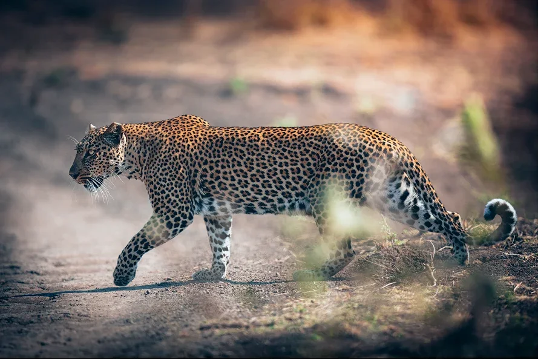
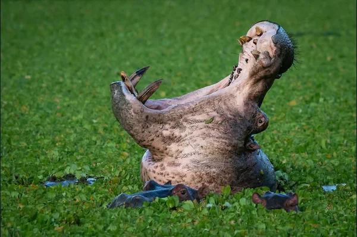

What it's about
The feeling that calls you back to the bush.
The Safari Five is about what safari has always been about: wild country, the guides who read it, the people who keep it wild, and the time to take it all in. It is the feeling that gets into you on safari and makes you long to be back in the bush. People who come to love the bush are the people who come to care for Africa. That is what this is for.
Safari has always been about being there.
From the early tented safaris of East Africa to the first bushcamps of the south, the point was to live for a few days on Africa's terms. Every great safari, at any price, in any country, still does that.
Walking is how you learn the bush.
From Norman Carr's walks in Zambia to Ian Player's wilderness trails in South Africa, the pioneers knew it: you understand wild country best on foot. A track read in the sand, an alarm call before the sighting, an elephant watched from fifty paces with nothing between you but grass and good judgment.
The best camps let the wild in.
The first bushcamps were a few grass huts by a river. Wherever you stay, the nights you remember are the ones when an elephant breaks a branch outside your room, and you lie still and listen.
Sightings thrill us. Understanding stays with us.
We all love the leopard in the tree. A great guide also shows you why it is there: the kill it is guarding, the tracks it left, the alarm calls that gave it away.
Wild places are kept wild by people.
Scouts on patrol, villages that live beside the animals, camps that pay their way. Meeting them is part of the safari, and our stay helps keep it all going.
The bush is alive, and every day starts over.
It wakes before dawn, rests through the heat of the day, and stirs again in the golden hour and after dark, with a new cast and a new story each time. Within a day or two, you fall into its rhythm and come to love its pace.
Dust on the boots is part of the story.
Faded canvas, worn linen and boots that have seen a season or two. Each one carries a few memories.
The bush calls you back.
Wherever it first got hold of you, the plains of Kenya, the Serengeti, the Okavango, a Zambian riverbed, the Kruger, it stays with you. Sooner or later we go back, knowing the wilderness doesn't remember that you visited before. It is there for you to experience again: the sounds of the bush by day and by night, the low voices of the people who share their wonderful wild places with us, the dust-filled sunsets, wildlife like nothing else on this planet, the light of a mopani fire dancing off the faces of your loved ones around you, a hint of adrenaline each day as you understand what it means to be in these wild places, and the billions of stars that twinkle clear up above.

Marking the journey
Safari Five. Dugga Boy. Guardian.
Safari Five
You have completed all five, anywhere in Africa, with your stamp from a Safari Five area.
Dugga Boy
You have completed the Safari Five three times. Dugga boys are the old buffalo bulls of the bush: they know every waterhole and wallow, and they never stray far from the wild.
Guardian
You have completed the Safari Five and help look after a wild place you love, by supporting its conservation or community work, through the Zambia Wildlife & Community Foundation or any group doing that work. Tell us, and we will add it to your name.

Ask anyone who has done the Safari Five what woke them at three in the morning. You will hear about a hippo grazing outside the tent, or a leopard coughing as it walked through camp.